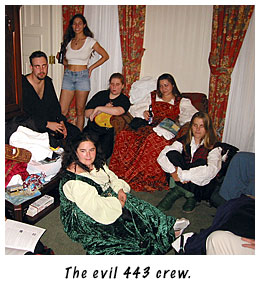
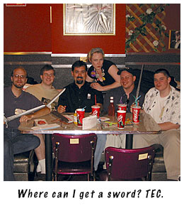
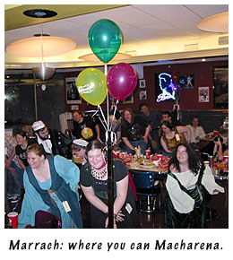
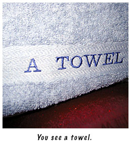

# 84: Another installment of Trials, Triumphs and TrivialitiesAugust 15, 2002 Dear Friends, I should start out by admitting this postcard is a fraud. Though I did indeed spend the last week in Milwaukee, as proven by the polaroids included, I didn't manage to write you this missive while I was there. Things were too busy, and the few times I tried to get started I was interrupted. So, please forgive the postmark, but the sentiment is the same. I was in Milwaukee for the majority of the last week — from August 5 through August 12 — because of GenCon. It's the biggest roleplaying convention in the world and a gathering place for gamers all of types — fans of Dungeons & Dragons, Magic: The Gathering, Diplomacy... and even computer games, like those we produce at Skotos. The whole experience got me thinking about some of the basic precepts that we've built Skotos Tech upon. Because I think I'm clever I've arranged three of those precepts into an alliterative trio that matches my own TT&T title: Community, Collaboration & Creativity. I may not be talking as specifically about game design as I do in my regular column this week, but it's a postcard, so you'll have to cut me some slack. And, in any case, I think my three precepts are important for any designer to consider when creating their own games. CommunityOne of the reasons that we created Skotos was because we wanted to help form genuine Internet communities. Not just the sort of off-handed community that forms when a couple of folks get together to play Chess or Bridge on the Internet, but rather a real community, whose members really know each other and care about each other — where that community stretches beyond just the games that the players inhabit together and becomes part of their real lives. This GenCon convinced me that we had achieved that goal in Castle Marrach. Two of our wonderful players, Kathy & Le, arranged a gathering for Marrachians on the first night of the convention. And, there were many players in attendance. Perhaps 30, perhaps 40 — I'm not absolutely certain of the numbers. But a lot. And, they came from great distances. One player travelled all the way from England. Others came from Canada. Within the United States we had players from California in the West to Georgia in the East. These were all people who were excited to see each other. They didn't need to bond — because they already had. It was like a reunion of old friends. They ate together, danced together, talked together, walked together, and gamed together. Although it's been a year and a half since I personally have played Castle Marrach for any notable amount of time, I was made to feel a part of that community too. It was humbling to see how strong of a community we'd formed. Or rather how strong of a community we'd enabled through our game, because it was the players who formed it.  Besides just the sheer coolness of the experience, I also learned a few new things about community: Communities are Infinitely Variable. At GenCon we saw the Marrach community, but we also many variants of that community. We saw sub-communities, such as the over half-dozen StoryCoders and StoryPlotters that we had lunch with one day, or the Pfister room 443 crew of folks who talked long into the night. But, we also saw super-communities, such as when the players of TEC who had come to the Skotos/Marrach dinner were invited to participate in the Marrach LARP — and did. Really, all of GenCon was one large community, of which we were but a small fragment. Communities are Stronger than they Appear. Sometimes, in an electronic medium like the Internet, it's easy to get caught up in the complaints and problems of a very, very few community members. On the internet you don't have the signals that you have in real life, indicating how rational complaints are, showing how many people are actually listening to them, or revealing how many folks are agreeing with them. And so every attack seems like the end of the world. Actually meeting community members, like we did at GenCon, helps put everything in perspective. You can suddenly start measuring problems on a personal basis, rather than on the basis of who has the most time to send angry mails and write angry posts. Did some of the people at the con have complaints with existing games or suggestions for improving them? Definitely. But we got to see the constructive side of criticism, rather than the destructive one, and that made the true strength of the community that much more obvious. What the Internet breaks down, personal contact can rebuild. CollaborationWell before he founded Skotos Tech, Christopher Allen was an early proponent of Groupware. That's software that allows you to work together with other people in a collaborative computer environment. Thus, it's not too surprising that collaboration became a part of the Skotos mission.  There's implicit collaboration within our Skotos games; people come together to tell stories and build worlds. But, collaboration goes beyond that. We offer forums, where people figure out both IC and OOC issues. Long ago one of our fans started a Castle Marrach calendar, and that's now become a collaborative environment too, with numerous people all keeping the latest meetings and events updated. We've also discovered a great Groupware tool called TWiki, which allows multiple people from multiple remote locations to share text files, each contributing to a whole. At Skotos we have TWiki webs set up for all our important documents as well as each of our games. The players of Marrach have created their own TWiki web that contains even more collaborative detail about plots, code, and individual guilds. Collaborative tools help communities grow. But, I'm getting a bit off-track here, because I'm writing this postcard tell you about GenCon. In many ways, it's just a repeat of what I said when I discussed community. Despite never having met each other before, for the most part, our players at GenCon collaborated amazingly in person. Whether it was part of a weird dance, or intense discussions about the plotting future of Marrach, it was like these folks had worked together for years. Which many of them had. Electronic collaboration or in-person collaboration .. it's all the same thing if done right. CreativityAnd, finally, that leads me to the last of my three Cs. Creativity. When we founded Skotos we wanted to offer a venue where our players could express their own creativity in unique and interesting ways. Again, GenCon showed us how well that idea had been accepted. Some of our players had made wonderful props for the Castle Marrach LARP at GenCon — towels and painted boxes and beautiful costumes, all harkening back to the in-game reality. When we talked to the StoryPlotters and StoryCoders of Marrach it became obvious that our few ideas about a Castle of Romance, two years gone now, had blossomed a hundred fold, and these half-dozen amazing individuals, and their fellows who could not attend, were filling the Castle with things we could never have imagined. When we talked with the players it became obvious that they had imagined personas within the Castle that, each and every one of them, also expanded our long-ago initial ideas. It was humbling and amazing; I'm glad we were able to let go of Marrach last year, to truly empower the creativity of our users by making Marrach theirs. Players will have unique ideas; encourage and empower them. Looking forward from this GenCon I see that creativity growing more and more in the year to come. We've taken the first step by telling our players it's OK to make new things, and now they're ready to run the rest of the marathon. I talked with the new Lead Designer of Devils Cay, a future game to be set in the Caribbean. I talked with numerous people eager to join in and help build Lovecraft Country. It's my hope, that as we move forward into the next year that even our strategy games will inspire new types of creativity. As I've been expanding Galactic Emperor: Hegemony, I've been figuring out how to modularize it. A new diplomacy system that I hope to finish soon should be largely standalone and thus available to any game. An email system for Devils Cay? A message transmission system for Lazarus Sleeping? A core system for a totally new strategy game designed by a player? It could become any of these things. We've now got dozens of creative minds working on projects at Skotos — the fine people I met at GenCon and many others. As each of us builds new game and designs new systems we'll be making them available for other Skotos builders too. Like open source, but for an expanding gaming community. Pretty cool. Sincerely,In many ways, GenCon reminded me why I'm here, at Skotos. The things I want to be building. Community. Collaboration. Creativity. In his recent open letter, Christopher Allen mentioned that our membership goals have not been met to date. That's true but in these other areas we've exceeded our expectations by far. If you're a player of the Skotos games, a reader of this column, or just a postman who's scanning this postcard in transit, thanks for being a member of our community, for collaborating in the forums and elsewhere, and for offering up that piece of your own creativity. Give my love to mom and the gold fish.
Sincerely,
|